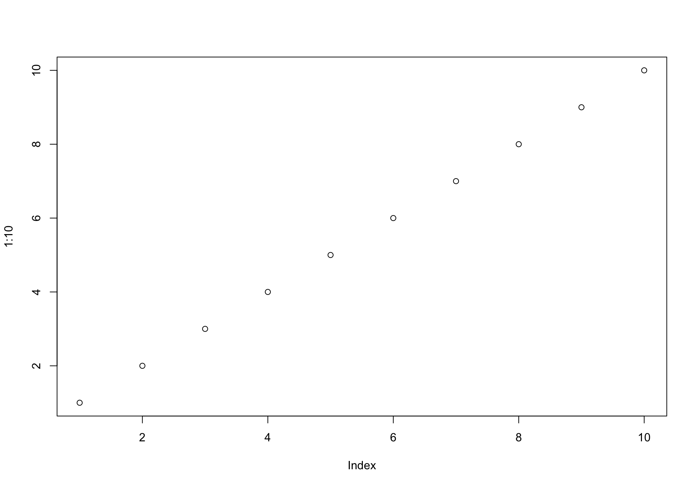
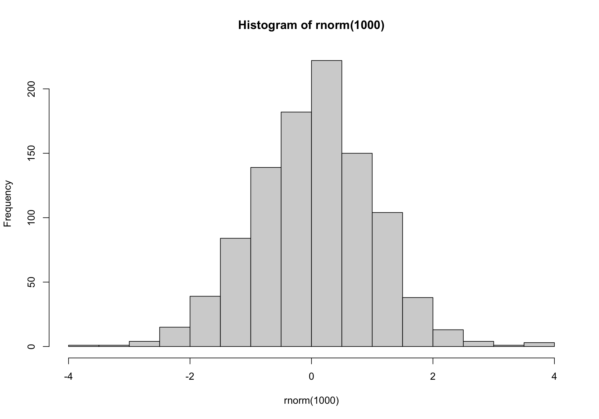

A minimal R Markdown example
A quote:
Markdown is not LaTeX.
To compile me, run this in R:
library(knitr)
knit('001-minimal.Rmd')See output here.
code chunks
A paragraph here. A code chunk below (remember the three backticks):
1+1## [1] 2.4-.7+.3 # what? it is not zero!## [1] 5.551115e-17graphics
It is easy.
plot(1:10)
hist(rnorm(1000))
inline code
Yes I know the value of pi is 3.1415927, and 2 times pi is 6.2831853.
math
Sigh. You cannot live without math equations. OK, here we go: \(\alpha+\beta=\gamma\). Note this is not
supported by native markdown. You probably want to try RStudio, or at
least the R package markdown, or the function
knitr::knit2html().
nested code chunks
You can write code within other elements, e.g. a list
foo is good
strsplit('hello indented world', ' ')[[1]]## [1] "hello" "indented" "world"bar is better
Or inside blockquotes:
Here is a quote, followed by a code chunk:
x = 1:10 rev(x^2)## [1] 100 81 64 49 36 25 16 9 4 1
conclusion
Nothing fancy. You are ready to go. When you become picky, go to the knitr website.